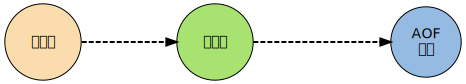

AOF
Redis 分别提供了 RDB 和 AOF 两种 持久化 机制：
- RDB 将数据库的 快照 snapshot 以 二进制 的方式保存到 磁盘 中
- AOF 则以 协议文本 的方式，将所有对数据库进行过 写入的命令 （及其 参数 ）记录到 AOF 文件 ，以此达到记录数据库状态的目的

- 首先介绍 AOF 功能的运作机制
- 了解命令是如何被保存到 AOF 文件里的
- 观察不同的 AOF 保存模式对数据的安全性、以及 Redis 性能的影响
- 之后会介绍从 AOF 文件中恢复数据库状态的方法，以及该方法背后的实现机制
- 最后还会介绍对 AOF 进行重写以调整文件体积的方法， 并研究这种方法是如何在不改变数据库状态的前提下进行的
如果还没了解过 AOF 功能的话， 请先阅读 Redis 持久化手册中关于 AOF 的部分 。
AOF 命令同步
Redis 将所有对数据库进行过 写入的命令 （及其 参数 ） 记录 到 AOF 文件 ， 以此达到记录数据库状态的目的， 为了方便起见， 称呼这种 记录过程 为 同步 。举个例子， 如果执行以下命令：
redis> RPUSH list 1 2 3 4 (integer) 4 redis> LRANGE list 0 -1 1) "1" 2) "2" 3) "3" 4) "4" redis> KEYS * 1) "list" redis> RPOP list "4" redis> LPOP list "1" redis> LPUSH list 1 (integer) 3 redis> LRANGE list 0 -1 1) "1" 2) "2" 3) "3"
那么其中四条对数据库有修改的写入命令就会被同步到 AOF 文件中：
RPUSH list 1 2 3 4 RPOP list LPOP list LPUSH list 1
为了处理的方便， AOF 文件使用 网络通讯协议 的格式来保存这些命令。比如说， 上面列举的四个命令在 AOF 文件中就实际保存如下：
*2 $6 SELECT $1 0 *6 $5 RPUSH $4 list $1 1 $1 2 $1 3 $1 4 *2 $4 RPOP $4 list *2 $4 LPOP $4 list *3 $5 LPUSH $4 list $1 1
除了 SELECT 命令是 AOF 程序自己加上去的之外， 其他命令都是之前在终端里执行的命令
同步命令到 AOF 文件的整个过程可以分为三个阶段：
- 命令传播：Redis 将执行完的 命令 、命令的 参数 、命令的 参数个数 等信息 发送 到 AOF 程序 中
- 缓存追加：AOF 程序根据接收到的命令数据，将 命令 转换 为 网络通讯协议 的格式，然后将协议内容 追加 到服务器的 AOF 缓存 中
- 文件写入和保存： AOF 缓存 中的内容被 写入 到 AOF 文件 末尾
- 如果设定的 AOF 保存条件 被满足的话， fsync 函数或者 fdatasync 函数会被调用，将写入的内容真正地 保存 到 磁盘 中
接下来将详细地介绍这三个步骤
命令传播
当一个 Redis 客户端需要执行命令时， 它通过 网络连接 ， 将 协议文本 发送 给 Redis 服务器
比如说， 要执行命令 SET KEY VALUE 客户端将向服务器发送文本 "*3\r\n$3\r\nSET\r\n$3\r\nKEY\r\n$5\r\nVALUE\r\n"
服务器在接到客户端的请求之后， 它会根据 协议文本的内容 ， 选择适当的 命令函数 ， 并将各个 参数 从 字符串 文本转换为 Redis 字符串对象 StringObject
比如说， 针对上面的 SET 命令例子， Redis 将客户端的命令指针指向实现 SET 命令的 setCommand 函数 并创建三个 Redis 字符串对象， 分别保存 SET 、 KEY 和 VALUE 三个参数（命令也算作参数）
每当命令函数 成功执行 之后， 命令参数 都会被 传播 到 AOF 程序 ， 以及 REPLICATION 程序。这个执行并传播命令的过程可以用以下伪代码表示：
if (execRedisCommand(cmd, argv, argc) == EXEC_SUCCESS): if aof_is_turn_on(): propagate_aof(cmd, argv, argc) # 传播命令到 AOF 程序 if replication_is_turn_on(): propagate_replication(cmd, argv, argc) # 传播命令到 REPLICATION 程序
以下是该过程的流程图：
这里不讨论REPLICATION，列在这里只是为了完整性的考虑
缓存追加
当命令被传播到 AOF 程序之后， 程序会根据 命令 以及命令的 参数 ， 将命令从 字符串对象 转换 回 原来的协议文本
比如说， 如果 AOF 程序接受到的三个参数分别保存着 SET 、 KEY 和 VALUE 三个字符串 那么它将生成协议文本 "*3\r\n$3\r\nSET\r\n$3\r\nKEY\r\n$5\r\nVALUE\r\n"
协议文本生成之后， 它会被追加到 edis.h/redisServer 结构的 aof_buf 末尾 。aof_buf 域则保存着所有等待写入到 AOF 文件的协议文本：
struct redisServer { // 其他域... sds aof_buf; // 其他域... };
至此， 追加命令到缓存的步骤执行完毕。综合起来，整个缓存追加过程可以分为以下三步：
- 接受命令、命令的参数、以及参数的个数、所使用的数据库等信息
- 将命令还原成 Redis 网络通讯协议
- 将协议文本追加到 aof_buf 末尾